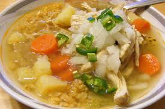

Chicken Rice Soup

Description
Rice and soups are staples in Colombian cuisine and today's recipe mixes the two. Chicken rice soup is one of my favorites. We Colombians eat bananas with some soups and believe it or not, it is delicious, try it!
This Chicken Rice Soup has a wonderful consistency and is delicious.
Enjoy!
Ingredients
- 8 chicken thighs or 2 breasts
- 7 cups chicken broth
- ¼ cup dressing sauce see recipe
- 2 medium potatoes cut into cubes
- ½ cup white long grain rice
- ½ cup of peas
- ½ cup diced carrots
- ¼ cup fresh cilantro
Steps
-
In a large pot, place all the ingredients, except the rice and cilantro. Bring to a boil then reduce heat to low and simmer for 45 minutes.
-
Add the rice and continue to simmer for 15 to 20 more minutes or until the rice is tender. Remove the chicken from the pot, remove the skin and debone, breaking the meat into pieces and returning the meat to the soup. Season with salt and pepper. Add cilantro and serve.